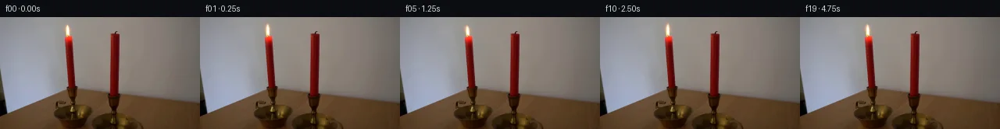

![首帧]()

Round 00
2026-11-05T05:51:52.852765+00:00像素候选变化代码 +174/−0inspection 更新
pixels 71a51d208e5ea836 · code 7d66767eb95f618c
查看本轮 generate.py 真实 diff
--- previous/generate.py
+++ current/generate.py
@@ -0,0 +1,174 @@
+"""Photographic continuation by local, anchored RGB-residual flame warping.
+
+Only first_frame.png supplies scene pixels; all motion is deterministic local
+NumPy pixel math. No image-view tools, models, render engines, or network calls.
+"""
+from pathlib import Path
+import json
+import numpy as np
+from PIL import Image, ImageDraw
+from artifact_io import save
+
+ROOT = Path(__file__).resolve().parent
+HEIGHT = np.array([1., 1.07, 1.13, 1.10, 1.01, .94, .91, .95, .99,
+ 1.035, 1.09, 1.08, 1.015, .97, .94, .97, 1., 1.02,
+ 1.07, 1.025])
+BEND = np.array([0., .35, .80, .65, .10, -.40, -.85, -.65, -.35,
+ .05, .50, .75, .40, 0., -.60, -.50, -.15, .05, .35, .15])
+WIDTH = np.array([1., .98, .96, .97, 1., 1.03, 1.055, 1.025, 1.,
+ .985, .97, .985, 1., 1.015, 1.035, 1.015, 1., .995, .98, 1.])
+ENERGY = np.array([1., 1.006, 1.015, 1.009, 1., .994, .987, .995,
+ 1.003, 1.018, 1.013, 1.004, .996, .990, .989, .998,
+ 1.005, 1.002, 1.010, 1.001])
+
+
+def smoothstep(a, b, v):
+ z = np.clip((v - a) / (b - a), 0., 1.)
+ return z*z*(3.-2.*z)
+
+
+def bilinear(array, x, y):
+ """Zero-extended bilinear sampling of an RGB residual field."""
+ h, w = array.shape[:2]
+ x0, y0 = np.floor(x).astype(int), np.floor(y).astype(int)
+ wx, wy = x-x0, y-y0
+ result = np.zeros(x.shape+(3,), dtype=np.float64)
+ for dx, dy, weight in ((0, 0, (1-wx)*(1-wy)),
+ (1, 0, wx*(1-wy)),
+ (0, 1, (1-wx)*wy), (1, 1, wx*wy)):
+ ix, iy = x0+dx, y0+dy
+ valid = (ix >= 0) & (ix < w) & (iy >= 0) & (iy < h)
+ sampled = array[np.clip(iy, 0, h-1), np.clip(ix, 0, w-1)]
+ result += sampled * (weight*valid)[..., None]
+ return result
+
+
+def generate(first):
+ photo = first.astype(np.float64)
+ yy, xx = np.mgrid[0:144, 0:256].astype(np.float64)
+ # A locally reconstructed backdrop, with rowwise estimates from outside
+ # the luminous flame. Only values under the residual mask are used.
+ left = photo[:, 76:79].mean(axis=1)
+ right = photo[:, 98:101].mean(axis=1)
+ mix = np.clip((xx-77.) / 22., 0., 1.)
+ backdrop = left[:, None, :]*(1.-mix[..., None]) + right[:, None, :]*mix[..., None]
+ excess = photo-backdrop
+ # RGB excess is supported by the measured warm flame/glow footprint.
+ # Feather its low-energy fringe to avoid transporting background grain.
+ warm = smoothstep(1.5, 7.5, excess[..., 0])
+ footprint = (smoothstep(76., 80., xx)*(1.-smoothstep(96., 100., xx))
+ * smoothstep(4., 8., yy)*(1.-smoothstep(22.7, 24., yy)))
+ residual = excess*(warm*footprint)[..., None]
+ frames = [first.copy()]
+ for i in range(1, 20):
+ # Inverse scaling anchors the root at (87,24); tip bending grows
+ # with distance above the wick. Source texture supplies flame color.
+ source_y = 24. - (24.-yy)/HEIGHT[i]
+ u = np.clip((24.-source_y)/14., 0., 1.35)
+ bend = BEND[i]*u**1.55
+ # Width changes also taper toward the wick attachment point.
+ local_width = 1. + (WIDTH[i]-1.)*smoothstep(0., 1., u)
+ source_x = 87. + (xx-87.-bend)/local_width
+ warped = bilinear(residual, source_x, source_y)
+ energy = 1. + (ENERGY[i]-1.)*smoothstep(23.9, 12., yy)
+ continuation = photo-residual + warped*energy[..., None]
+ # A compact fixed window makes the photographed setup exactly static.
+ region = (xx >= 74) & (xx <= 102) & (yy >= 2) & (yy <= 23)
+ frame = np.where(region[..., None], continuation, photo)
+ frames.append(np.rint(np.clip(frame, 0., 255.)).astype(np.uint8))
+ return np.stack(frames)
+
+
+def transition_sheet(frames):
+ """Numeric diagnostic artifact, not an assertion of visual review."""
+ sheet = Image.new('RGB', (1024, 640), (25, 28, 35))
+ draw = ImageDraw.Draw(sheet)
+ labels = [(0, 1), (2, 3), (5, 6), (9, 10), (13, 14), (18, 19)]
+ for row, (a, b) in enumerate(labels):
… diff truncated; 87 more lines …